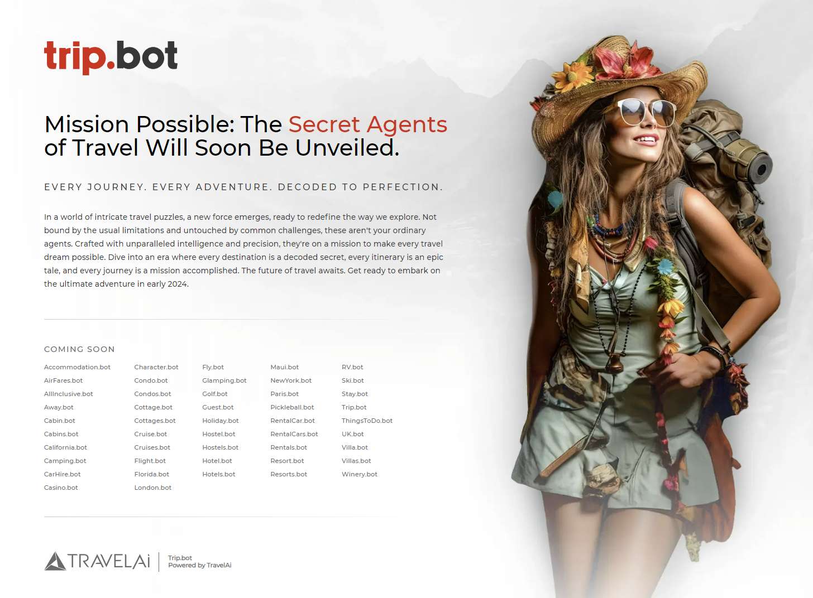

Take a moment and imagine the days when travel planning was a hop down to your local strip mall travel agency, surrounded by colorful brochures and large, cumbersome maps. Travel agents served as our personal travel wiza
Take a moment and imagine the days when travel planning was a hop down to your local strip mall travel agency, surrounded by colorful brochures and large, cumbersome maps. Travel agents served as our personal travel wizards, pulling the strings behind the curtain and crafting journeys that seemed almost magical. This era, characterized by its reliance on human expertise and paper-based resources, set the foundation for the travel planning we’ve come to know today.
But as the digital revolution took hold, a seismic shift occurred. The dawn of the internet brought with it an avalanche of online resources. Suddenly, everyone had the power to be their own travel agent. Websites brimming with information, online booking portals, and customer reviews became the new compasses guiding our travel decisions. A democratic explosion of choices marked this period. Yet, it also ushered in the challenge of navigating through an overwhelming sea of information.
With the advent of smartphones and mobile apps, travel planning soon became a task we could perform with a few taps and swipes. The power had shifted from what once were travel agency wizards to our fingertips, as we gained access to an unprecedented amount of information.
However, this ease of access didn’t necessarily translate to easier decision-making. On the contrary, the abundance of options often led travelers to the paradox of choice, where more wasn’t always merrier.
Today, as we stand at the frontier of a new transformative era, Artificial Intelligence (AI) agents are poised to redefine travel planning once again. This time, they aren’t just sophisticated algorithms. They serve as our personal travel curators who understand our preferences, learn from our past adventures, and even predict our desires. They symbolize a leap from static, one-size-fits-all information to dynamic, personalized travel guidance.
At TravelAI, we’ve embraced the concept of ‘micro personalization,’ a philosophy that AI agents embody. These agents aren’t mere lines of code; they’re akin to digital storytellers weaving a narrative uniquely ours. They delve into the granular details of our travel preferences — the kind of insights that make our experiences genuinely unique.
Imagine an AI agent that not only suggests destinations but finds that quaint seaside cafe you’d love or that jazz club tucked away in a city’s historic alley, all based on your past likes and social media activity. These agents are akin to a seasoned travel companion who knows your preferences for flight window seats, your fascination with heritage hotels, or your passion for offbeat adventure trails.
How AI Agents are Changing the Game
- Personalization in the Age of AI: Imagine planning a journey not just to any destination but to YOUR destination. AI agents, given their deep personalization capabilities, are revolutionizing travel by crafting tailored experiences that resonate with your individual story. They’re like a personal travel diary that understands your narrative and then translates it into journeys.
- Efficiency is The Unsung Hero:
In a world where time is the new currency, AI agents bring much-needed efficiency to travel planning. They sift through options, manage logistics, and anticipate potential changes, making your journeys seamless. Think of it as having an expert guide who knows all the ins and outs of travel, dedicated to making your trips as smooth as silk.- Breaking Down Barriers:
Thanks to AI agents, language and accessibility barriers are also becoming relics of the past. With real-time translation and personalized assistance, these agents ensure that every corner of the world is not just a spot you’d visit but a place you’ll fully experience and connect with deeply.
In the world of Applied AI, understanding the technical side of AI agents involves peering into the complex yet fascinating world of modern AI technologies. Two key components playing a pivotal role in the future of AI-driven travel planning are multi-modal generative AI and vector databases.
Multi-modal generative AI refers to AI systems capable of understanding and generating outputs across various data types which should include text, images, and even voice. It’s not simply typing into the likes of ChatGPT and getting your answers in plain text back. You’ll need to be able to see and hear what you seek. “Trip the senses” is a phrase that we like to use. This capability is particularly transformative in the travel industry.
Let’s say there’s an AI agent capable of not only reading your textual requests, but it can also interpret your uploaded photos to suggest destinations with similar landscapes or architecture. Or an agent that listens to your voice, picking up on subtle emotional cues like excitement or hesitation, to effectively tailor its travel suggestions. This level of understanding paves the way for AI agents to offer a more holistic and intuitive planning experience, crafting travel itineraries that are aligned not just with your stated preferences but also with the emotions and desires conveyed through your interactions.
Vector databases are another tech marvel reshaping how AI agents predict and suggest travel opportunities. These databases allow for the storage and retrieval of complex data structures, such as user preferences and behavior patterns, in a highly efficient manner. By utilizing vector databases, AI agents can analyze vast amounts of data to identify subtle patterns and preferences. This allows them to offer suggestions that are increasingly aligned with your wants, desires, and even your evolving travel behavior.
For instance, if you’ve shown a growing interest in eco-friendly travel options, the AI agent, powered by vector databases, can detect this trend and start suggesting destinations and accommodations that align with the sustainable travel practices you have in mind.
Together, multi-modal generative AI and vector databases represent the cutting edge of travel technology, enabling AI agents to provide highly personalized, accurate, and context-aware travel suggestions. They mark a significant leap from being the traditional travel planning tools of old to instinctive companions offering a glimpse into your future. One that can recommend new surprising things you never knew you were into previously. This makes each travel experience a deeper exploration of your discerning tastes and preferences, and more importantly— yourself.
As we look to the future, AI agents are set to become more than just tech tools. They are poised to evolve into trusted travel companions— characters if you will, that accompany you through your entire travel journey: ideation, booking, anticipation, the journey, the stay, the return home, and the retrospective.
We’re talking about agents that not only suggest destinations. We’re talking about characters who also understand who we are and our preferences so they can gain the necessary details to plot more cherished experiences. Companions that adapt to real-time changes in terms of our moods, and consequently, our itinerary.
As we peer into the horizon of travel’s future, the role of AI agents continues to evolve in a fascinating and profoundly transformative way. These agents (already remarkable in their ability to personalize travel suggestions) are on the cusp of becoming our lifelong travel companions. They are poised to transcend the boundaries of traditional travel planning tools, becoming integral parts of our journeys that understand how we’re more than just travelers, but individuals with evolving preferences and unique stories to tell.
Picture a future where AI agents are more than just itinerary planners but intuitive co-pilots who accompany you through every step of your trips. These agents will do more than suggest the best flights or hotels; they’ll tune into our moods to understand whether we crave adventure or tranquility. They’ll adapt to the rhythm of our day, then suggest a lively street market visit when we’re feeling energetic or a serene sunset spot when we feel a need for some peace. They will even know whenever we need or deserve a vacation before we do.
Now, imagine an AI agent that evolves with you over time — a character that you’ll come to know better and love. Your AI companion learns and adapts as you grow and your travel preferences shift. Like a friend who has known you over the years, your agent is aware that you once loved bustling city breaks but now prefer the tranquility of countryside retreats. It will not just respond to your requests but can also anticipate your needs — perhaps suggesting a yoga retreat or a wellness spa before you even realize that’s exactly what you need. The best thing is, that no matter what happens, you are always in control.
In this hopeful future, AI agents will also become more empathetic and context-aware. They will understand the nuances of our lives — recognizing significant events like anniversaries or milestones and suggesting celebratory trips or restful getaways. They’ll become skilled at reading the subtle cues in our behavior and preferences, offering suggestions that align not just with our stated desires but with our unexpressed wishes as well.
Moreover, these AI travel companions/characters will play a crucial role in making travel more sustainable and responsible. They’ll guide us towards eco-friendly travel options, local experiences that benefit communities, or destinations where our visit can make a positive impact on people, the planet, and ourselves. They’ll help balance our desire to explore the world with the need to preserve it for future generations.
How awesome is that?
In essence, the future of AI in travel is not just about technological advancement; it’s more about crafting more meaningful, fulfilling, and responsible travel experiences. Today’s tech has the potential to mold a new era where travel is not just about seeing new places but about growing, learning, and connecting with the world and with ourselves. Soon, AI agents will take on the catalyst’s hat for a richer, more mindful way of traveling that resonates with who we are and who we aspire to be.
If you have read this far, here’s a little treat. Given our excitement for the space, it should come as no surprise that we’ve been working on a new age for AI Travel Agents. We hope to introduce this family of agents relatively early in 2024.
Technology is changing quickly, but we are not going to simply sit on the sidelines. We need to create the future we want… to move beyond search or today’s web that’s powered by questions and answers. We need to move into a space filled with Agents and Actions. These agents of ours will soon live at Trip.bot (and Stay.bot, Hotels.bot, Cruise.bot, Ski.bot, and so many more).
We hope you’re as excited as we are. Stay tuned for more details.

As our sneak peek through the evolving landscape of travel tech draws to a close, one thing is clear: We are on the brink of a transformative era. AI agents, once viewed as mere tools in the realm of travel planning, are now emerging as vital companions in our journeys of discovery. They represent a fusion of technology and humanity, offering not just a bridge to new destinations but a gateway to deeper, more meaningful travel experiences.
These AI companions are rewriting the travel narrative, turning each journey into a personalized tale that resonates with our individual spirit. They are the silent guardians of our travel dreams, the unseen architects of our adventures, and the gentle guides leading us to uncharted territories — both geographically and within ourselves. Characters one and all.
Our mission at TravelAI is to create better travel. In this new era, travel becomes more than a mere change of scenery for everyone. It transforms into trips of self-discovery, growth, and meaningful connections. With AI agents as our co-pilots, we are no longer just visitors to foreign lands; we become part of a global narrative woven together by the threads of our unique experiences and the intelligent guidance of our digital companions. That is most assuredly better travel.
As we stand at this exciting crossroads, the future of travel beckons with promises of adventures tailored to our deepest desires, experiences that nurture our curiosity, and journeys that respect and preserve the wonders of our world. This future is no longer just a distant dream. It is shaping up to be a burgeoning reality crafted by the hearts of travelers with the hands of AI.
As we look ahead, whether to our ‘bot army’ or to countless others created by the community at large, let’s embrace this new age of travel with open arms and adventurous spirits. Traveling together with AI will allow us to explore not just the world around us but also the uncharted territories within ourselves. Up next in travel are journeys that promise to be discoveries of the soul fueled by the dance of technology and human aspiration.
###